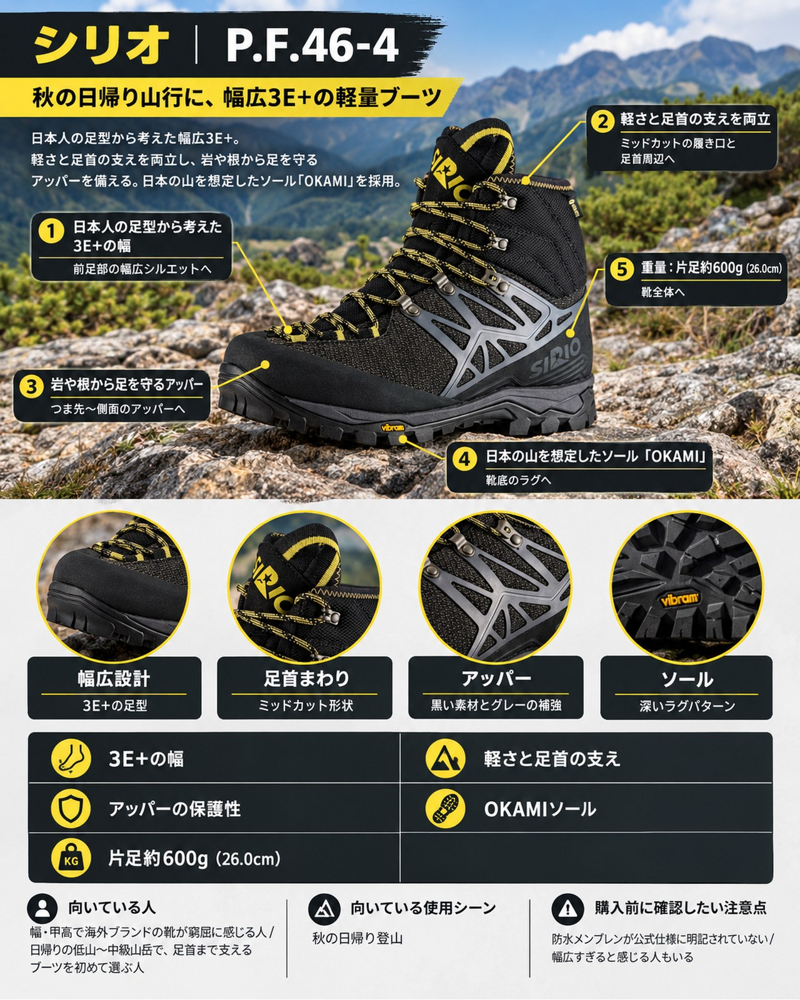

シリオ
P.F.46-4

¥30,800（税込）
初級から中級向けとされる、ワイズ3E+で片足約600g（26.0cm）のライトトレッキングブーツです。
購入先
基本情報
| ブランド | シリオ |
|---|---|
| カテゴリー | シューズ（登山靴） |
| 対象 | ユニセックス |
| 価格 | ¥30,800（税込・2026-10-29 確認） |
主な特徴
- ワイズ3E+の幅広設計
- 片足約600g（26.0cm）と軽量
- フレックスプレート内蔵の3Dアンクルパッド
用途・季節の目安：通年／低山・中級山岳 気になりやすい点への対応：軽さ
メーカー公表の仕様
ブランド公式ページの記載をそのまま整理しています。記載がない項目は「不明」とし、推測では書きません。
| 重量 | 600g（約600g（26.0cm・片足。公式記載）） |
|---|---|
| 素材 | 撥水加工済みアラミド繊維（デュポン™ ケブラー®）、撥水加工済みナイロン、TPUリブゲージ。ソール：シリオ・VIBRAM® ŌKAMI（張替え可）、シャンク：プラスチックソフトA |
| 防水・撥水 | 不明（公式ページに記載なし） |
| サイズ展開 | 22.5〜29.0cm（ワイズ3E+） |
ヤマフィットの評価
上の公式記載をもとにヤマフィットが整理した評価です。メディアやユーザーの評価・レビューは、まだ収集していないため掲載していません。
メリット
- ワイズ3E+の幅広設計
- 片足約600g（26.0cm）と軽量
- フレックスプレート内蔵の3Dアンクルパッド
- フロントロングバンパー、ヒールバンパー、マッドガードで補強
- シリオ・VIBRAM® ŌKAMIソール（張替え可）
デメリット
- 公式仕様に防水メンブレンの記載がない（アッパーは撥水加工）
- シャンクはプラスチックソフトAで、初級〜中級向けの位置づけ
- カラーはブラックのみ
向いている人
- 足幅が広く、幅広の登山靴を探している人
- 日帰りの低山〜中級山岳でハイカットの靴を使いたい人
向いていない人
- 重い荷物を背負う縦走が中心の人
- 公式仕様で防水メンブレンを確認できる靴を選びたい人
購入前の注意点
- サイズ感：ワイズ3E+（公式記載）
- サイズ：22.5〜29.0cm（ワイズ3E+）
- 価格・在庫・仕様は変わります。2026-10-29 時点の確認内容で、在庫は確認できていません。購入前に各販売サイトで最新情報をご確認ください。
- 山行の前には、最新の気象とルートの状況を必ずご確認ください。
参考情報源と確認日
- www.sirio.co.jp（公式ページ） 2026-10-29 確認
PR広告・免責について
このページにはアフィリエイト広告が含まれます。リンク先での購入により、当サイトが報酬を受け取る場合があります。掲載順や評価は、報酬の有無や大小では決めていません。